Settings
Settings page is visible only to the admin . By default, the one who installed the application is an admin, you can assign admin role to any person from the user’s page.
Organizations
Office LocationsHere, you can add office locations by clicking on Add button. For each location, a work week can be defined. In this table add zero for weekend days and any number on working days. Use adds more button to add multiple office locations and finally click on Save button.
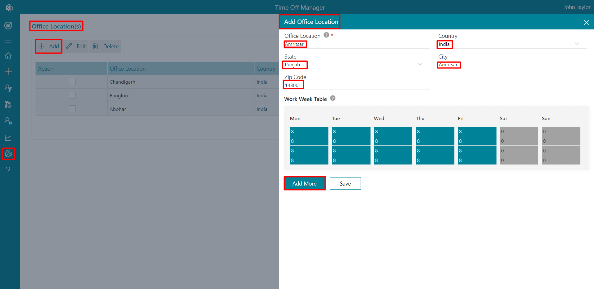Once the office locations have been added all the locations will be displayed in the public holiday page and from here you can add public holidays for each location. These locations will show up in office location dropdown of add user panel. Public holidays and weekend leaves for user are based on location or office location.
Leaves Type Settings
Here you can add new leave type by clicking on add button and entering all the details. You can add leave types, status, accrual, show leave types in home page, partial day, leave notice in advance, secondary approver, tertiary approver etc.
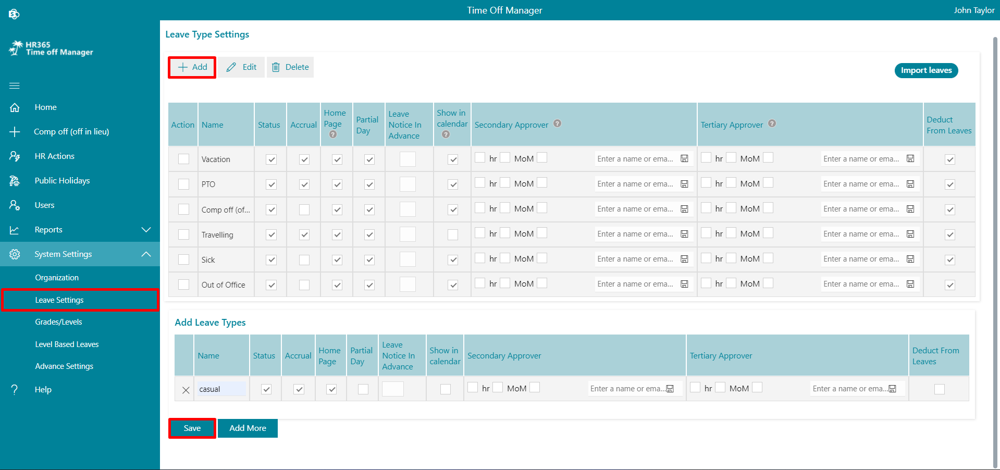- Status: If it is enabled, it will display in apply leave form and user can apply for that leave.
- Accrual: Leave accrual can be enabled for as per your requirement. (In Advance setting accrual leave should be enabled and then select accrual type).
- Homepage: If this is enabled, it will display in home page as Leave Status.
- Partial Day: If this is enabled for particular leave, user can able to apply leave for partial day (0.5 or 0.25 leave).
- Leave Notice in Advance: You can enter the number of days you want the leaves to applied in advance.
- Show in calendar: Show/hide applied leaves on the calendar of apply leave form from the leave settings.
- Secondary Approver: You can select HR or manager of manager or any user as seconder approver. Select HR or MoM check box and enable switch. You can type person in people picker box, click on save button and enable switch.
If Fist approver (i.e., Manager of user) approve the leave request, request goes to second approver.
You can also make some second approver as auto approver from the advance settings, there you have to select the leave types, job title and finally click on save icon.
- Tertiary approver: You can select HR or manager of manager or any selected email id as tertiary approver
- Import leaves: You can import leaves from the Leave Type Settings (Can add balance leaves of last year through the bulk import).
Advance Settings
From here you can add approvers, send notifications to approvers, allow negative leaves, change date format, theme color, company or brand logo and icon, Graph API Integration and Auto approvals etc.
Calculate leaves include weekends / holidays
If you want to include weekends as leaves, you can enable the toggle switch. Users are allowed to apply for leaves for the weekend.HR Approvers
You can add HRs for approvers by entering their names or email IDs and clicking on the save icon.Additional Approvers
If you want the leaves to be approved by additional approvers, you can enable them.Reminder notifications to approvers
If any approver forgets to approve the leave, a reminder email notification will be sent, if you enable it.Allow Negative Leaves
If this is enabled, users are allowed to request the leaves even though leaves are not available.Allow Backdate leaves
If this is enabled, users are allowed to submit back date leaves by X days.Leave Accrual
It is the amount of vacation time that an employee has earned as per a company's employee benefits policy, you can enable it if you want.Allow External Domains
You can add External, or guestuser's domains separated by comma, e.g.: xyz.com, abc.com. You can allow guest user to request the leaves.-
Annual Leave Start Date and Annual Leave End Date
You can mention the annual leave start date and end date here. If accrued leaves are enabled, leaves will be calculated and allocated to users based on these date and date of joining of the candidate.
Examplelet say
candidate joining date = 15 th March 2021.
Annual Start date= 1 st Jan 2021
Annual End Date = 31st Dec 2021.
Casual Leaves = 24.✔ If accrued is disabled, candidate allocated leave would be (24 leaves /12 month) * Remaining months i.e., 9 months = 18 Leaves allocates for a years
✔ If accrued is enabled and type is Monthly, for march month allocated leave will be 2 and it increase by 2 on every month.
✔ If accrued is enabled and type is quarterly
24 leaves/ 3 quarter for year = 8 leaves for each quarter
Now (1st quarter= 8 leaves) / 4 months = 2 leaves
∴ 2 leaves * 2 months (remaining months to complete one quarter) = 4 leaves allocates in first quarter and then 8 leaves would allocate for in each quarter automatically.Allocated leaves
Date Format
If you change the date format, it will update in entire application.
Total Hours In Work Week
Here, you can add total working hours in a week.
Work Week
In this table add 0 in the cell for weekend. Leave calculation will be done based on working days.
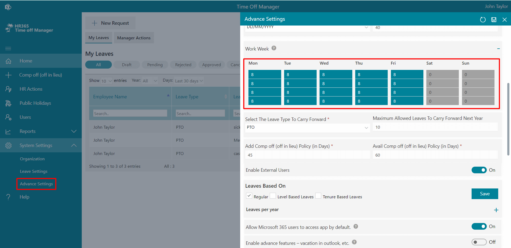
Select The Leave Type To Carry Forward
You can select the leave type and enter the number of leaves, which would be carried forward.
Maximum Allowed Leaves To Carry Forward
You can enter the maximum number of leaves that can be carried forwarded.
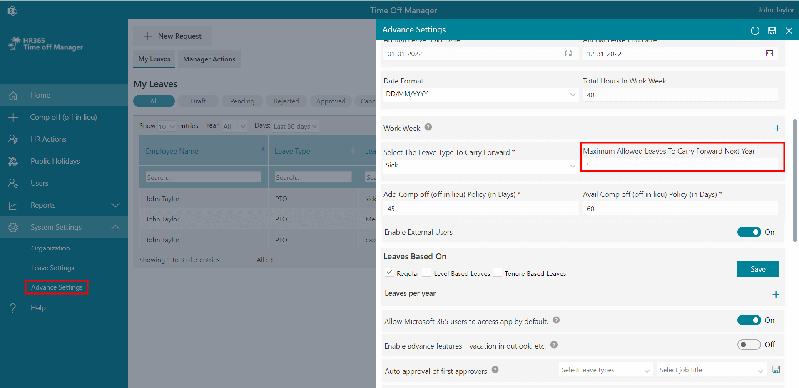
Add Comp off (off in lieu) Policy (in Days)
Here a number can be entered in days that a user is allowed to send an add comp request for the specific days worked in the past.
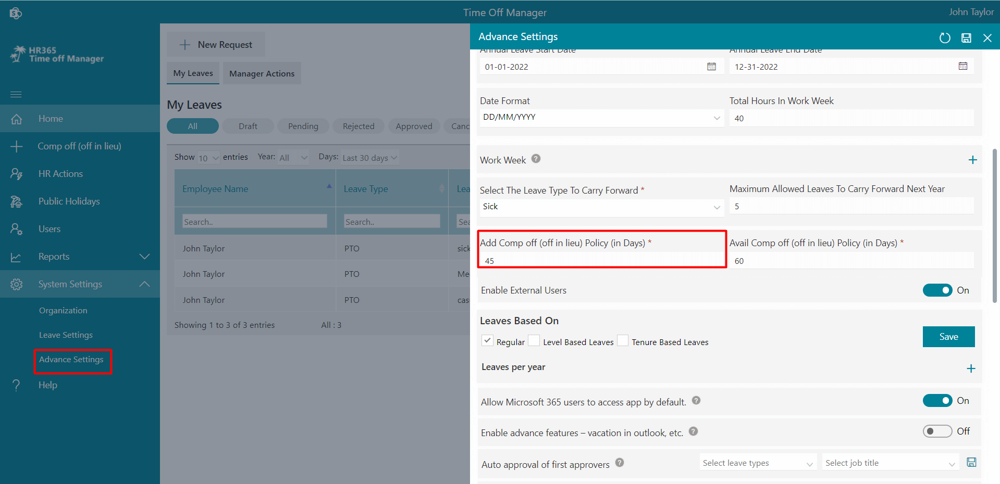
Avail Comp off (off in lieu) Policy (in Days)
Here number can be entered in days so that users are allowed to take the comp off leave within specified time period else, comp leave will be cancelled.
Enable External Users
You can enable it if you want to allow external users.

Leaves Based On
Leaves are based on 3 categories. If you want to enable it just select check box and click on Save button.
-
Regular: Here you can enter the total number of leaves. This leave allocates for all users based on date of joining and accrued (optional). If you want change leave for particular user, it can we done from user page.
-
Level Based Leaves: If this is enabled, level-based leaves and grades options
Will display under systems settings from where we have to first define grades for different job tile in grades then we have added leaves numbers for such grades from leave based option.
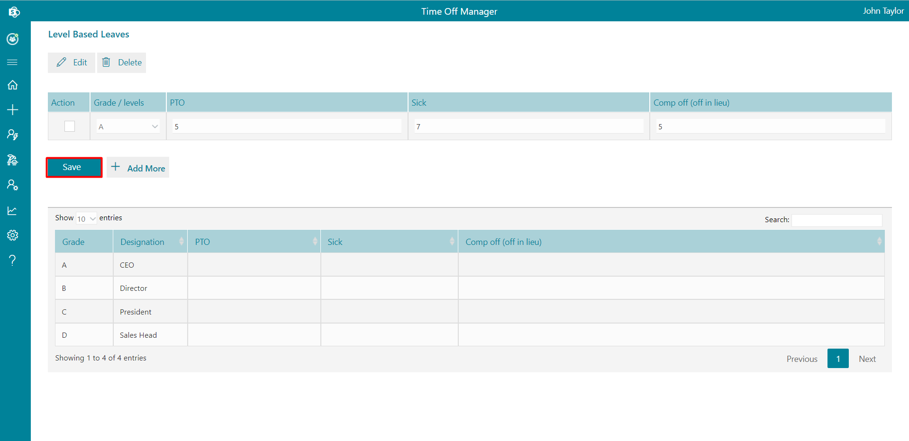
-
Tenure Based Leaves: If this is enabled, second-level approval for leave cancellation will be available. By default, HR is the second-level approver for leave cancellation.
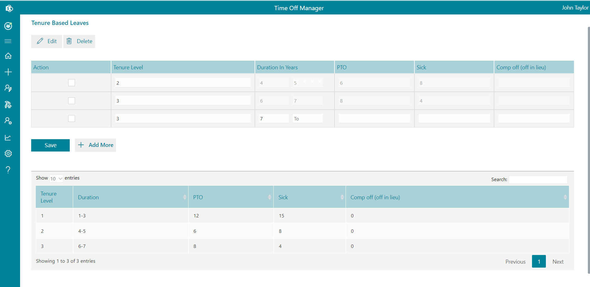
Allow Microsoft 365 users to access app by default.
If this is enabled, users get added to the user page automatically when they open an application for the first time and get a user role.
Enable advance features – vacation in outlook, etc.
To show leaves in calendar of user and manager, we can configure graph API.
Auto approval of first approvers
You can enter the leave type and/or job title of users for first approvers.
Auto approval of secondary approvers
You can enter the leave type and/or job title of users for secondary approvers.
Auto approval of tertiary approvers
You can enter the leave type and/or job title of users for tertiary approvers.
Auto approval exception
You can mention leave types, if you don’t want to auto approval from auto approvers.

Calculate partial leave
Here, you can calculate partial leave (Can select the partial day on either an hourly basis or half/quarter-day from the advanced setting).
Second level approval for leave cancellation
If this is enabled, If you want second-level approval for leave cancellation.
Display title
You can hide/show title field while aplying leave.
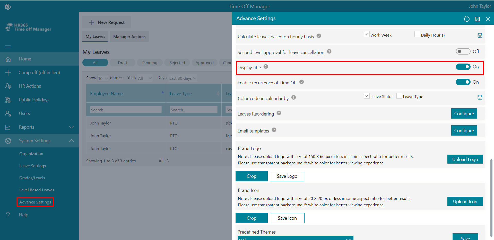
Enable recurrence of Time Off
If enabled, you can find control of recurrence on the top right corner after clicking on "new request" on home page of the application.
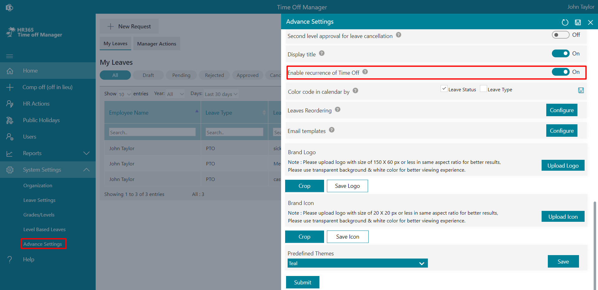
Color code in calendar by
Here, you can define color in calendar bases on leave status and leave type. If you want to enable it, just select check box and click on save icon.
Leaves Reordering
From here you can reorder the leave tabs of leave request form.
Language selection as browser default language
Here, you can enable the toggle for the language selection as browser default language.
Language selection in case browser default language is not detected
Here, you can select language in case browser default language is not detected
Email templates
Here, you can conifure email notification body and add more placeholders.
Brand Logo
If you update your company logo, it will update at top of side panel.
Brand Icon
If you update your company icon, it will update at top of side panel.
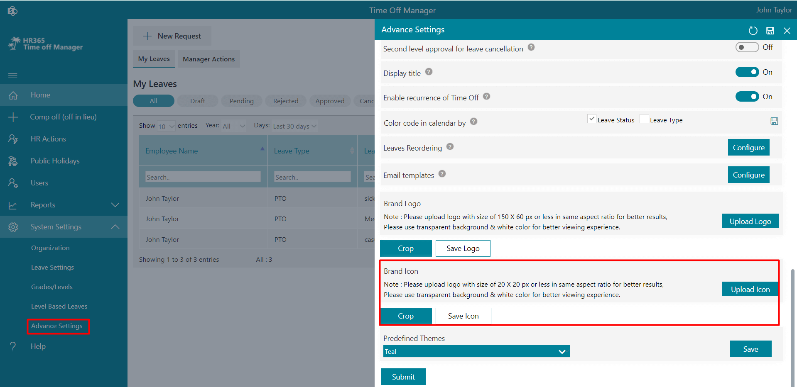
Predefined Themes
You can select any of the theme color from the given colors only.
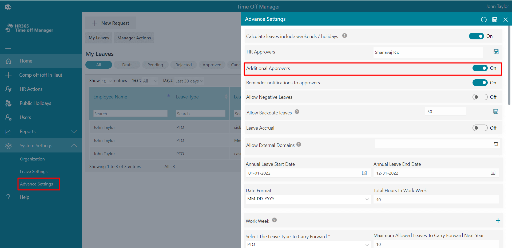